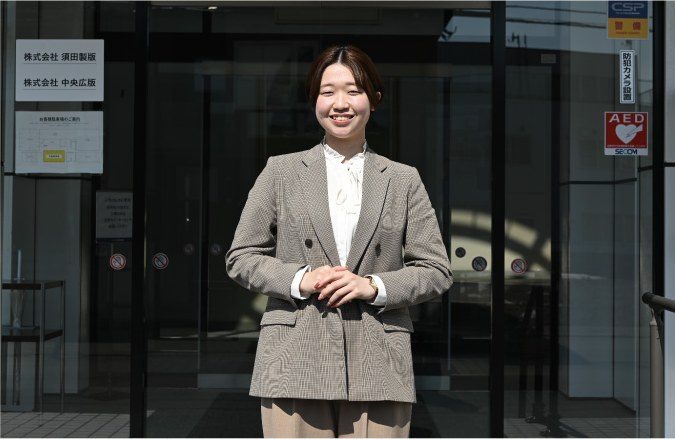
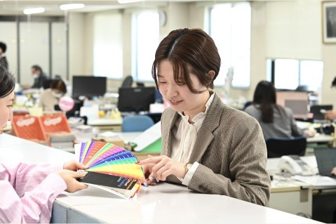
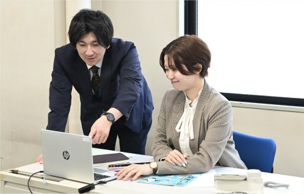
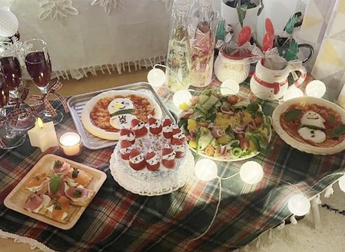

2026年 取材当時
札幌本社 営業部
N.M20代
2025年入社
札幌市立大学 デザイン学部デザイン学科
2025年3月卒
私の仕事内容
私は主にお客様のもとへ伺い、課題やお困りごとを丁寧にヒアリングするところから業務が始まります。内容を整理したうえで見積もりを作成・提出し、ご発注いただけた際には、制作・印刷・加工まで一連の手配を行います。いわば、「入口から出口まで」を担当する役割です。定期的案件の冊子物では、校正のやり取りを4〜5回行うことも珍しくありません。毎回クライアントと直接修正箇所を確認し、慎重すぎるくらい確認します。少々念入りではありますが、その積み重ねが印刷ミスを未然に防ぐ最大の近道だと考えています。基本的にはルート営業のため、定期的にお客様を訪問し、「何かお役に立てることはないか」を伺います。そして、そんな訪問時に欠かせない必須アイテムが——じゃらんです。仕事の話の合間に、ちょっとした会話のきっかけをつくってくれる、意外と優秀な営業ツールだったりします。
1日のスケジュール
8時半までには出社し、1日の流れを確認します。
午前にお客様から相談いただいたお見積りを立てたり、校正のチェックをしたりします。
納品に行ったり、クライアントに顔を出してお話をしたりします。
週に1回必ず課の会議を行い、常に情報を共有しています。
1時間ランチ休憩をします。お昼は毎回持参しています。
明日のスケジュールを調整し、退勤します。
入社してから成長を感じた出来事
入社当初は、何をやるにしても右も左も分からず、そもそも「誰に、何を聞けばいいのか」さえ分からない状態で、毎日を過ごしていたと思います。しかし、入社して半年ほど経った頃、先輩からクライアントを少しずつ引き継ぐことになり、気づけば「自分で考えて動かざるを得ない環境」に放り込まれていました。伝票の立て方、お客様とのやり取り、印刷の流れ、校正の進め方など、一つひとつ実践しながら覚えていく中で、「以前はできなかったことが、いつの間にかできるようになっている」と感じる場面が増えていきました。私的には、大きな変化があったというより、気づいたらできることが増えていた、という感覚に近いかもしれません。これからも、日々成長し、会社に貢献できるよう精進いたします。

入社前のイメージと入社後で違ったこと
入社前後で感じたギャップは、いい意味で「何でもできる会社」だったことです。「こんなこともできるんだ」と、思わず心の中でつぶやいたことを今でも覚えています。印刷会社と聞くと、紙の印刷物を中心とした仕事を想像されがちですが、実際には紙にとどまらず、WEBサイト、動画制作、SNS広告など、さまざまな媒体に取り組んでいます。社内でよく言われるのが、「お客様に相談されたら、とりあえず“できます”と答えよう」という言葉です。最初は驚きましたが、「本当にできるのだろうか？」と思うようなご相談でも、社内外の知恵や手段を組み合わせることで、最終的には形にしてきました。入社して強く感じたのは、「決められたことをこなす会社」ではなく、お客様の困りごとに向き合い、方法を考え、試し、実現していく会社だということです。私たちは単なる印刷会社ではなく、多様な手段を用いてお客様の課題解決に取り組む会社だと感じています。

プライベートタイム
私は、オンとオフの切り替えをわりと大事にしています。平日はしっかり仕事に集中して、休日は仕事のことを考えない、というのがマイルールです。そのために、休日になると通勤用鞄は部屋の奥にしまって、強制的に仕事モードをオフにしています。休日の過ごし方は、その時の気分次第。家で料理をしたり、編み物をしたり、ドラマを一気見したりと、インドアな時間を楽しむこともあれば、ひたすら散歩をしたり、買い物に出かけたり、友人と遊んだり飲みに行ったりすることもあります。週に2日しかない休みを、どうやったら一番満足できるかを考えるのも、ちょっとした楽しみです。プライベートなイベントで特に力を入れていることは、「クリスマス」です。私は1年で一番クリスマスが好きなので、1か月以上前から飾りつけをし、少しでも多くのクリスマスパーティーが開催できるよう心がけています。ぜひ、師走の頃に一度我が家に来てみてください♪

本人撮影